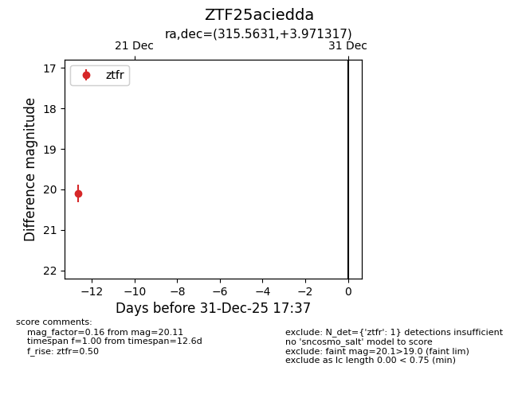
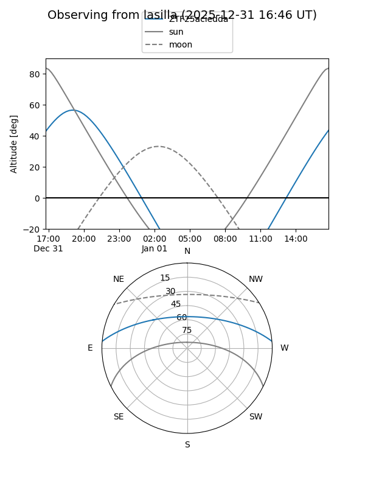
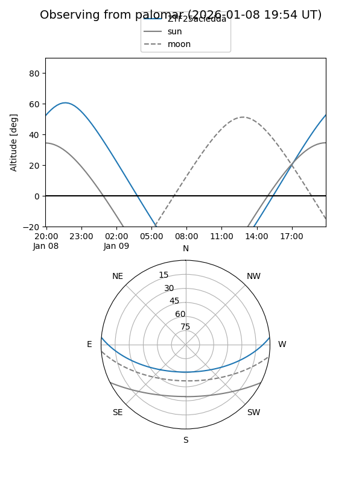

ZTF25aciedda
Target ZTF25aciedda at 2026-01-09 12:49
Aliases and brokers:
FINK: link
Lasair: link
ALeRCE: link
alt names
ZTF25aciedda (ztf,fink_ztf)
Coordinates:
equatorial (ra, dec) = 315.5631,+3.97132
equatorial (HMS+DMS) = 21:02:15.15,+03:58:16.74
galactic (l, b) = (53.0448,-26.62317)
Flags:
Photometry:
last ztfr=20.11
1 ztfr detections
Lightcurve

Visibility


Additional plots